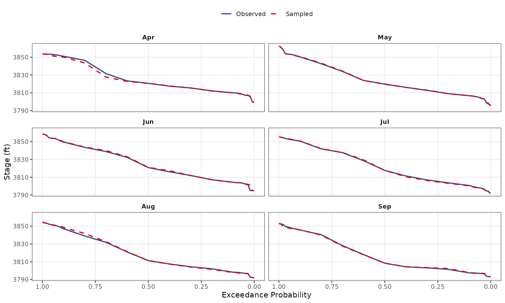

Starting Stage Sampling Validation
Source:vignettes/validation-starting_stage.Rmd
validation-starting_stage.RmdPurpose
Verify that the starting stage sampling processes/module produces a reliable sequence of starting stages that represents the observed stage-duration (quantiles) of the input stage timeseries data.
The starting stage sampling processes produces creates a sequence of
reservoir stages which is Nsims in length. Starting stages
are sampled randomly from the observed record based on randomly sampled
months (InitMonths). Similar to the seasonality sampling
process, this test validates the application of sample()
within rfa_similate() produces a sample of stages
consistent with the input.
This involves two tests:
Stage Duration Curve Verification — Confirm that quantiles computed directly from the observed stage time series (
stage_ts) match thejmd_stage_durationdataset included in the package.Sampled Stage Validation — Confirm that stages sampled via the seasonality-weighted sampling process reproduce the observed stage quantiles within acceptable tolerance.
Input Data
The observed stage record
(stage_ts <- jmd_wy1980_stage) contains daily pool
elevation readings. The jmd_stage_duration dataset contains
pre-computed monthly stage duration curves at specified exceedance
probabilities.
stage_ts <- jmd_wy1980_stage
stage_ts$months <- lubridate::month(lubridate::mdy(jmd_wy1980_stage$date))
stage_ts <- stage_ts[!is.na(stage_ts$months), ]
probs <- 1 - jmd_stage_duration$ProbabilityTest 1: Observed Quantiles vs. Package Dataset
Compute stage quantiles directly from the observed time series for
each month and compare against jmd_stage_duration
(“Observed Stage Duration”).
obs_quantiles <- sapply(1:12, function(m) {
unname(quantile(stage_ts$stage_ft[stage_ts$months == m],
probs, na.rm = TRUE))
})
sd_matrix <- as.matrix(jmd_stage_duration[, -1])
diff_matrix <- obs_quantiles - sd_matrix
max_diff_obs <- max(abs(diff_matrix), na.rm = TRUE)| Month | Max Absolute Difference (ft) | |
|---|---|---|
| January | Jan | 0.0048 |
| February | Feb | 0.0050 |
| March | Mar | 0.0048 |
| April | Apr | 0.0050 |
| May | May | 0.0048 |
| June | Jun | 0.0050 |
| July | Jul | 0.0050 |
| August | Aug | 0.0048 |
| September | Sep | 0.0046 |
| October | Oct | 0.0048 |
| November | Nov | 0.0050 |
| December | Dec | 0.0050 |
Test 2: Sampled Stage Quantiles vs. Observed Stage Quantiles
Sample 10,000 stages using the seasonality and starting stage
sampling process in rfa_simulate():
Sample 10,000 months using the JMD seasonality distribution (
jmd_seasonality$relative_frequency)Sample a starting stage from the observed record for that month.
Compare the resulting stage duration curves against the observed curves.
set.seed(42)
seasonality_prob <- jmd_seasonality$relative_frequency
Nsims <- 10000
InitMonths <- sample(1:12, size = Nsims, replace = TRUE, prob = seasonality_prob)
InitStages <- numeric(Nsims)
UniqMonths <- sort(unique(InitMonths))
for (i in 1:length(UniqMonths)) {
sampleID <- which(InitMonths == UniqMonths[i])
InitStages[sampleID] <- sample(stage_ts$stage_ft[stage_ts$months %in% UniqMonths[i]],
size = sum(InitMonths == UniqMonths[i]), replace = TRUE)
}
sample_stages <- data.frame(months = InitMonths, stage_ft = InitStages)| Month | Max Percent Difference (%) |
|---|---|
| Apr | 0.1020 |
| May | 0.0776 |
| Jun | 0.1584 |
| Jul | 0.0376 |
| Aug | 0.0719 |
| Sep | 0.0673 |
Months not sampled (zero seasonality probability): Jan, Feb, Mar, Oct, Nov, Dec. These months correctly produce no samples.
